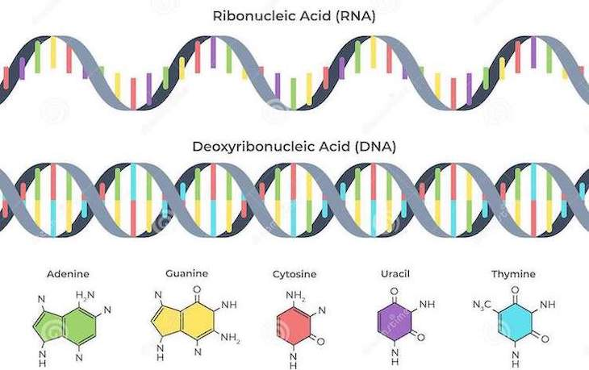

Дезоксирибонуклеиновая и нуклеиновая кислота:
Нуклеотиды входящие в состав дезоксирибонуклеиновой кислоты содержат дезоксирибозу, остаток
фосфорной кислоты и одно из четырёх азотистых оснований: аденин, гуанин, цитозин или тимин.
 | Рибонуклеиновой кислоты выделяют три основных типа: | ||
| Рибосомные РНК | Транспортные РНК | Информационные РНК |